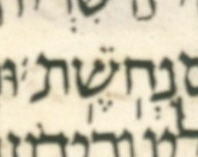

A meteg almost always comes before the stressed syllable of its word, but it can also come after the stress. We find that MAM has 231 cases of meteg after the stress (MAS).
In this document, by "word" we mean a chanted word, which is either a simple word (having just one atom) or a compound word (having two or more atoms connected by maqaf marks). By "atom", we mean a sequence of pointed letters uninterrupted by space, maqaf, or any other punctuation.
The location of a word's stress is not always obvious. In this document, we locate stress using Phonetic MAM, an edition of MAM that marks the stress of every word in MAM.
| cant-sys | c-words | MBS | MAS | % MAS |
|---|---|---|---|---|
| prose | 233,586 | 13,118 | 177 | 1.3% |
| poetic | 29,605 | 1,814 | 54 | 2.9% |
| all | 263,191 | 14,932 | 231 | 1.5% |
So a meteg comes before the stress 14,932 times and after it 231 times.
The prose row in the table above is for the 21 books plus the verses of Job's prose frame; the poetic row is for the verses of Job's main, poetic section plus all Psalms and the whole book of Proverbs. See the appendix on dually-cantillated passages for how this census handles them.
Across all 231 MAS records, only Jer. 46:14 has a following chanted word without initial stress: וְהַשְׁמִ֣יעֽוּ is followed by בְמִגְדּ֔וֹל. Every other following chanted word has initial stress, and every MAS has a conjunctive accent. The record is type 1 because its MAS syllable is open and final; the type-1 definition does not require the following chanted word's stress to be initial.
| Type | Prose | Poetic | All | Example |
|---|---|---|---|---|
| 1 | 112 | 10 | 122 | הִנֶּ֣נִּֽי |
| 2 | 34 | 26 | 60 | תַּצְמִ֣יחַֽ |
| 3 | 26 | 16 | 42 | וַיָּ֣צֵֽץ |
| misc | 5 | 2 | 7 | וַיֹּ֥אמֶֽר ׀ לֹ֖א |
Alternately, you can click on an individual Hebrew word to toggle only that word's spacing.
Types 2 and 3 could in principle overlap. In this survey, however, 56 of the 60 type-2 MAS syllables have pataḥ, while the other 4 have ṣere but are open. Thus no type-2 MAS meets the type-3 condition. Indeed, chanted words with a final tsere syllable closed by a guttural are quite rare even without a meteg. Only 154 of all 263,191 chanted words surveyed have a final tsere syllable closed by a guttural. All 154 occur in Aramaic and end in a mappiq he: 136 are in Daniel and 18 are in Ezra. An example is as follows:
Dan. 2:5 — וּפִשְׁרֵ֔הּ
Every MAS syllable directly follows the stress. In 227 records the MAS syllable is final. The other 4 records are type 2: each has an open penultimate tsere MAS syllable before a final furtive-pataḥ syllable.
| Isa. 63:12 | בּ֤וֹקֵֽעַ |
| Prov. 1:19 | כׇּל־בֹּ֣צֵֽעַ |
| Prov. 11:26 | מֹ֣נֵֽעַ |
| Job 5:10 | וְשֹׁ֥לֵֽחַ |
The 231 individual cases are listed separately and can be filtered by type.
The 7 misc cases have a separate table and descriptions of the named misc subtypes.
The 60 type 2 cases have a separate table whose filter uses the following chanted word's initial consonant.
The Holman M23 case has the MAM form Holman suggested on 2026-08-31, without a meteg where the Aleppo Codex form has one. The suggestion was taken, so current MAM has the meteg under the mem of the chanted word ק֣וּמִֽי at Isaiah 23:12.
The mark is of the open-syllable type: ק֣וּמִֽי is stressed on its first syllable and ends in an open syllable. That is the type both books call optional, and at 122 occurrences it is also the commonest of the three in MAM.
The same verse already had another MAS: לֹא־יָנ֥וּחַֽ, whose last syllable a guttural closes. So Isaiah 23:12 now has two of them, one of each of the two commonest types.
MAM has one other chanted word of exactly this shape, and the individual-cases page names it: ק֥וּמִֽי at Dan. 7:5, with the same open final syllable.
The counts above do not include the meteg of ק֣וּמִֽי. They are taken from the Phonetic MAM edition, which has not been regenerated since MAM gained it, so Isaiah 23:12 is one of the verses where the two texts have parted.
A meteg after a silluq would be hard to identify in Unicode, since the two marks are one codepoint.
MAM has no MAS on a silluq word, but 1 Samuel 17:5 does raise this issue in some BHS-derived editions.
| source | verse-final chanted word |
|---|---|
| MAM | נְחֹֽשֶׁת׃ |
| UXLC 3.9 | נְחֹֽשֶֽׁת׃ |
| WLC 4.22 | נְחֹֽשֶֽׁת׃ |
UXLC 3.9 and WLC 4.22 are BHS-derived transcriptions, and each has a second U+05BD on the final syllable. Their forms are evidence about UXLC and WLC. The corresponding Leningrad Codex line, F159A, column 3, line 8, is reproduced below so that the manuscript marking can be inspected directly.

Two of the three types could not occur on a silluq word: types 1 and 2 each require a following chanted word, which a verse-final chanted word does not have. Only type 3 could occur there.
One diagnostic overlaps the three positions rather than adding a fourth: a meteg can share a letter with an accent that marks no stress, which the prepositives, the postpositives, ole and geresh muqdam all do. There are 146 such meteg marks, and each is counted in the group its syllable puts it in, before or after the stress, rather than beside them.
MAM has dual-cantillation templates in the two Decalogues and Genesis 35:22. The analyses presented in this document use only the cant-alef branch of each template. The table counts only the chanted words inside those templates, not every chanted word in the numbered verses that contain them. The table below shows that this choice has no effect on the MAS count and changes the other two counts only by 1.
| count | cant-alef | cant-bet |
|---|---|---|
| Chanted words | 130 | 129 |
| MBS | 12 | 13 |
| MAS | 0 | 0 |
Only Deut. 5:14 differs in the number of chanted words. Cant-alef has two chanted words where cant-bet has one maqaf compound.
| cant-sys | c-words | c-word count |
|---|---|---|
| cant-alef | כ֣י ע֤בד | 2 |
| cant-bet | כי־ע֥בד | 1 |
Only Deut. 5:6 differs in metegs before the stress. Cant-bet has one meteg before the stress in the chanted word below; cant-alef has the two chanted words below, neither with a meteg.
| cant-sys | c-words | MBS |
|---|---|---|
| cant-alef | לֹא־יִהְיֶ֥ה לְךָ֛ | none |
| cant-bet | לֹ֣א יִהְיֶֽה־לְךָ֩ | one |
The three types of MAS are described in both ITM and CoS. Exactly what words are included and excluded in these three types vary between ITM, CoS, and our document here, but they broadly agree.
| Type | ITM | CoS | CoS-pg |
|---|---|---|---|
| 1 | §332 | §3(j), §§46-47 | 300; 354; 355 |
| 2 | §354 | §3(b), §§9-10 | 299; 308; 309 |
| 3 | §338, fed by §308 | §3(a), §§5-8 | 299; 301; 302; 306; 307 |